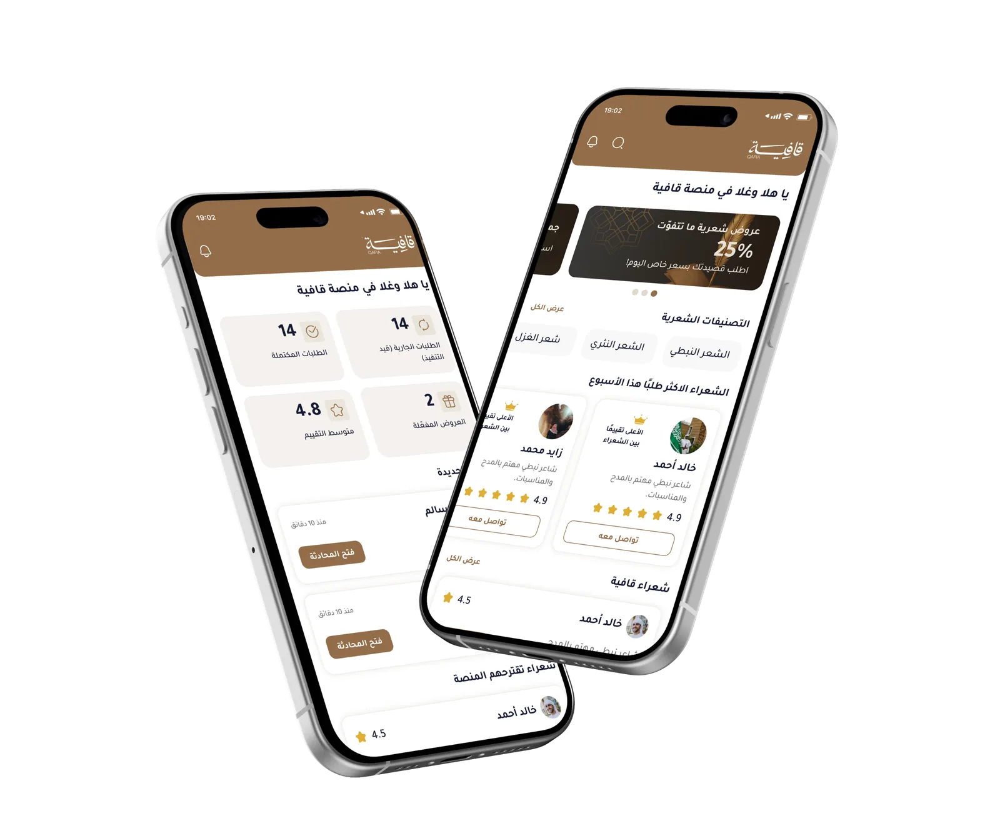
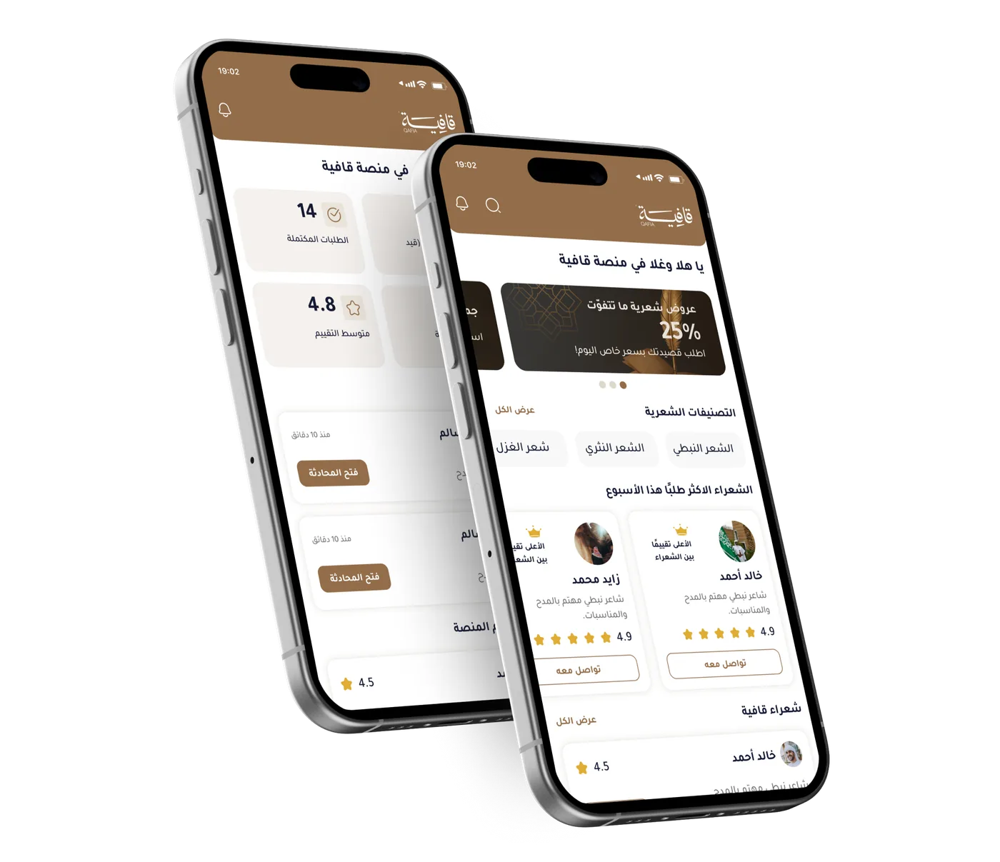

نحول القصيدة من لحظة عابرة
إلي أثر ثقافي يُقتنى ويُهدى ويُعاش

نقرّب المسافة بين الإلهام وصاحبِه
قافية شركة سعودية تعمل على تحويل الشعر العربي والفنون المرتبطة به إلى منتجات وتجارب ثقافية موثقة، تجمع بين أصالة الموروث واحترافية التشغيل وحداثة المنصة الرقمية.
تعريف قافيه
قافية ليست تطبيقًا فقط، بل منظومة ثقافية وتشغيلية تجمع المبدعين والعملاء والوجهات في مساحة جديدة في الاقتصاد الثقافي.
ما نمثله
حيث يصبح الشعر والخط والصوت والترجمة والهدايا الثقافية جزءًا للتقديم والتوثيق والاقتناء، لا مجرد محتوى معروض.
معايير العمل
تعتمد قافية على معايير تشغيلية تحفظ جودة التجربة دون تحويل الملف التعريفي إلى تفاصيل تجارية أو مالية.
-
وضوح الرحلة
يعرف العميل مراحل العمل، وما الذي سيحصل عليه، وكيف يتم التسليم.
-
المبدع المناسب
يتم ربط العمل بالمبدع الأقرب لطبيعة النص أو المناسبة أو نوع التجربة.
-
جودة التنفيذ
تراجع قافية عناصر النص والخط والصوت والترجمة والهدية قبل التسليم.
-
احترام الهوية
تقدم التجربة بما يليق بالموروث الثقافي وبخصوصية المكان واللغة.
-
توثيق العمل
يُحفظ الأثر بطريقة تساعد العميل على الاحتفاظ به أو مشاركته أو إهدائه.
مجالات عملنا
تعمل قافية في مسارات ثقافية مترابطة، تُقدَّم هنا بوصفها أعمالاً تشكل هوية الشركة وحضورها، دون الدخول في أي تفاصيل تجارية.
الشعر
صياغة قصائد مخصصة تعبر عن الأشخاص والمناسبات والوجهات والقصص الإنسانية
الخط العربي
تحويل النصوص المختارة إلى أعمال خطية أو مخطوطات قابلة للاقتناء والإهداء
الأداء الصوتي
تسجيل القصيدة أو النص بصوت مؤدٍ يمنح الأثر بعدًا سمعيًا قابلًا للحفظ والمشاركة
الترجمة
نقل المعنى الثقافي للزوار غير العرب بطريقة تحفظ روح النص وسياقه
التجارب الحية
تنظيم حضور المبدعين في المواقع والفعاليات ليصبح التفاعل جزءًا من التجربة
الهدايا الثقافية
منتج ثقافي أنيق يناسب الأفراد والضيافة والوجهات لتجميع العمل الإبداعي
شركاؤنا
تتعاون قافية مع الجهات والوجهات التي ترى في الثقافة تجربة حية وليست مجرد محتوى معروض.
الواجهات التراثية
لتفعيل تجارب مباشرة تربط الزائر بقصة المكان
الجهات الثقافية
لتطوير المبادرات التي تحفظ الفنون الحية وتوسع حضورها
الفنادق والضيافة
لتقديم هدايا وتجارب ذات هوية للضيوف والوفود
المتاحف والمراكز
لتحويل المعرفة والزيارة إلى أثر شخصي قابل للاقتناء
منظمو الفعاليات
لإضافة تجربة ثقافية مباشرة داخل المواسم والمناسبات
المؤسسات والشركات
لتطوير هدايا مؤسسية تعبر عن الهوية والامتنان والاحتفاء
منظومة المبدعين
ضمن إطار منظم يحفظ جودة التجربة ووضوح الأدوار، تقوم قافية على شبكة متعددة من المبدعين، يعمل كل منهم في جزء من رحلة الأثر الثقافي.
الشعراء
صياغة القصيدة وبناء النص من قصة العميل أو المكان.
الخطاطون والفنانون
تحويل النص إلى عمل بصري يحمل روح اللغة وجماليات الحرفة.
فريق التشغيل
تنسيق الرحلة، متابعة الجودة، وضمان وضوح التجربة للعميل والشريك.
المترجمون
إيصال المعنى للزوار غير العرب دون فقدان السياق الثقافي.
صناع الهدايا الثقافية
تحويل العمل إلى منتج مادي أنيق وقابل للإهداء.
المؤدون الصوتيون
منح النص حياة مسموعة وتجربة يمكن حفظها ومشاركتها.
رحلة الأثر الثقافي
تقدم قافية رحلة ثقافية بسيطة وواضحة، تجعل كل مرحلة من مراحل العمل مفهومة للعميل وقابلة للإدارة من فريق التشغيل.
-
الاستماع
تبدأ الرحلة بفهم القصة أو المناسبة أو السياق الذي سيولد منه العمل.
-
الإبداع
يصوغ الشاعر النص بما يناسب الشخص أو المكان أو المناسبة.
-
التشكيل
يتحول النص إلى خط أو صوت أو ترجمة أو هدية بحسب طبيعة الطلب.
-
التوثيق
يحفظ الأثر بصورة رقمية أو مادية ليصبح قابلًا للرجوع والمشاركة.
-
التسليم
تُسلَّم التجربة كأثر ثقافي مكتمل، يحمل النص والمعنى والذكرى.
الرؤية والرساله
نحوّل الإبداع الشعري والفني إلى تجارب أصيلة، تجمع بين حضور المبدع وأثر الثقافة.
الرؤية
أن تكون قافية مرجعًا عربيًا في تحويل الشعر والفنون المرتبطة به إلى أثر ثقافي حي، يجمع بين حضور المبدع في الميدان، ووضوح التجربة في المنصة الرقمية، وعمق المعنى في الذاكرة.
الرسالة
تمكين الشعراء والخطاطين والمترجمين والمؤدين الصوتيين وصناع الهدايا الثقافية من تقديم أعمالهم ضمن تجربة احترافية، تجمع الحضور الميداني بالمنصة الرقمية، وتقدم للعميل أثرًا أصيلًا وواضح الرحلة.
في المنصة
ننظم الطلب والمتابعة والتوثيق والتسليم عبر تجربة رقمية واضحة
في الميدان
نحضر في المواقع والفاعليات حيث تكون القصة جزءًا من المكان
في الثقافة
نحافظ على حضور الشعر والفنون الحية في التجارب المعاصرة
دع قصيدتك تجد صوتها المناسب
انضم إلى مجتمع يقدّر الكلمة ويمنح الشعر مكانه الذي يليق به.

قالوا عن قافية
تعرّف على تجارب وآراء المستخدمين الذين اختاروا قافية، واكتشف كيف ساعدتهم المنصة في تحويل أفكارهم ومشاعرهم إلى قصائد تُكتب خصيصًا لهم.
كل ما يدور ببالك
اعثر على إجابات لأكثر الأسئلة شيوعًا حول منصة قافية، بدءًا من إنشاء الحساب وطلب القصائد، وحتى آلية التواصل، والدفع، وتسليم الأعمال.
+ ما هي منصة قافية؟
قافية مساحة عربية تجمع بين الشعراء المحترفين ومحبي القصيدة، لطلب نصوص مخصصة أو الاطلاع على أعمال جاهزة.
+ كيف أطلب قصيدة مخصصة؟
اختر الشاعر، اشرح مناسبتك والروح التي تبحث عنها، ثم تابع الطلب حتى تستلم قصيدتك.
+ هل يمكنني التسجيل كشاعر؟
بالتأكيد. أنشئ ملفك، اعرض نماذجك وخدماتك، وابدأ باستقبال طلبات مناسبة لأسلوبك.
+ كيف تضمن قافية جودة التجربة؟
نوفر ملفات موثقة وتقييمًا واضحًا وتواصلًا منظمًا بين الطرفين في كل خطوة.